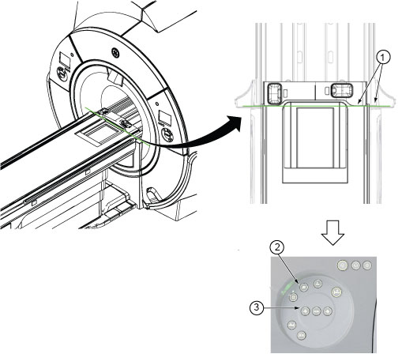
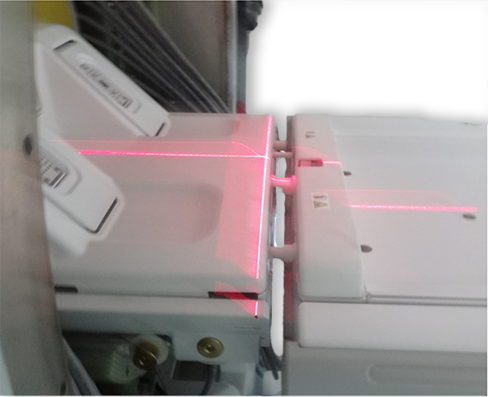

Adjust the cradle position and check the alignment of the laser light.
About this task
The laser lights are pre-adjusted at the factory and do not usually require realignment after the initial installation alignment procedures are completed.
Procedure
Adjust the cradle position to examine the laser light alignment.
Move the cradle in so that the bridge edge aligns with the cradle joint end cover.
Press Landmark.
Move the cradle out 8 mm.
NoteS and I shown on the display changes according to the patient orientation (head first or feet first).
Note The right side panel is a mirror image of the left side panel. The Out button is located at the far side of the panel away from the magnet bore.
Figure 1. Cradle positioning for laser alignment check

1
Align bridge edge with the cradle joint end cover
2
Landmark button
3
Move the cradle out 8 mm
Examine the laser line for correct alignment.
Figure 2. Correct alignment

The axial light must align with the cradle joint. The cradle joint end cover must be located 8 mm away from bridge end on each side.
The sagittal light must align with the middle line of the cradle.
If the laser lights are aligned correctly, make a mark with a pen in the locations of the axial light and the sagittal light, as shown in the figure. These marks will be the reference for future alignment light checks. After you make these marks, this procedure is complete.